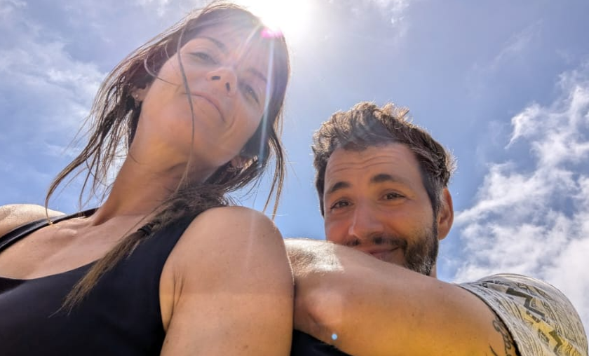
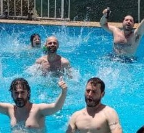
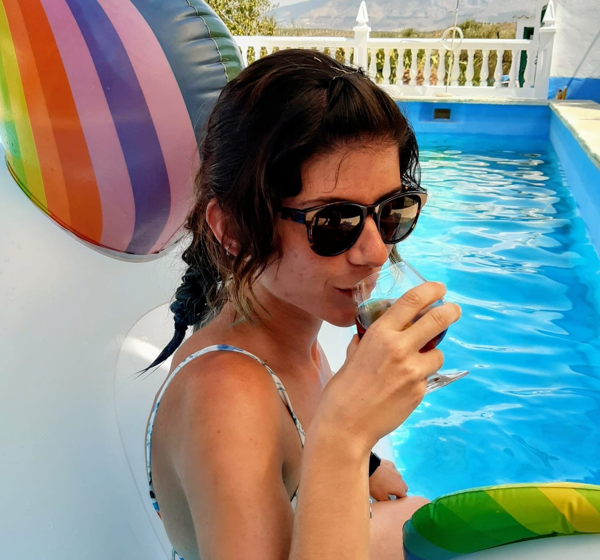
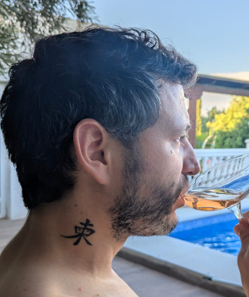
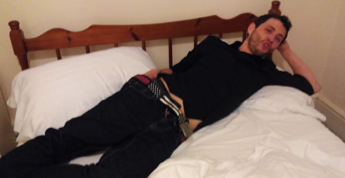
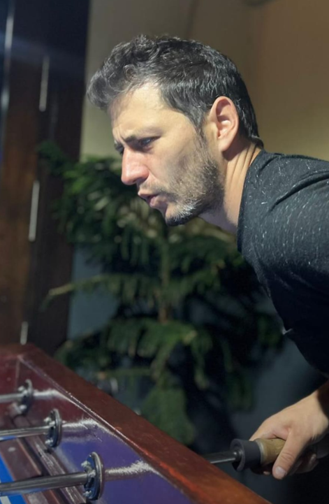
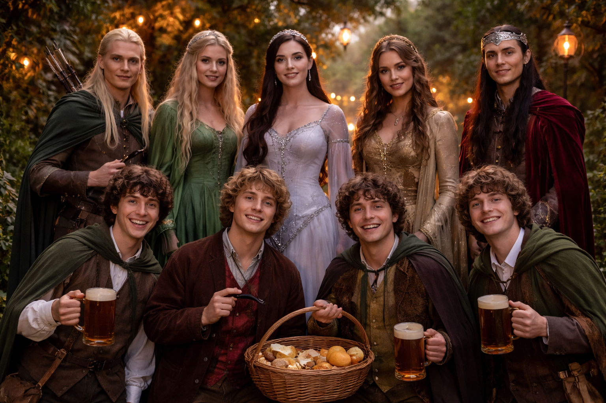
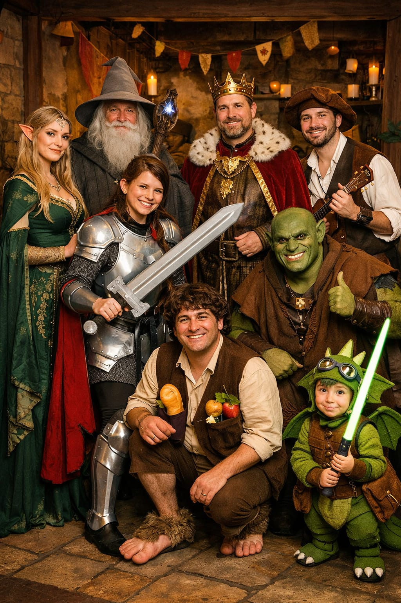
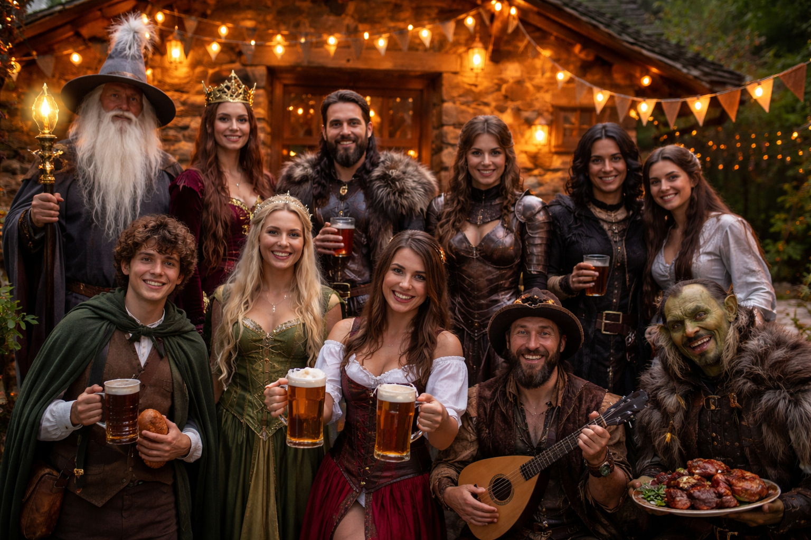

"Hay caminos que empiezan sin saber exactamente cómo acabarán… y merecen ser celebrados." — Gandalf
"Excusa legendaria para juntarnos, brindar, bailar y liarla un poco con amor."
A lo largo de este documento encontraréis toda la información necesaria sobre el finde que vamos a pasar en la casa rural: horarios, detalles prácticos y respuestas a posibles dudas. La idea es que vengáis preparados con todo lo necesario para disfrutar a tope de unos días que esperamos sean inolvidables.
Os instamos, queridos amigos (amigas y amigues), a recorrer con atención cada palabra de este escrito, forjado con esmero y buen ánimo, pues en sus líneas hallaréis guía y claridad. Que su lectura os allane el camino, disipe vuestras dudas y permita que cuanto está por venir transcurra con la armonía digna de una historia bien contada.

✦
Información general
Lugar: Hacienda Sierra del Pozo
Tenemos el alojamiento entero para nosotros en calidad de casa rural, es decir, no hay ni otros huéspedes ni tampoco hay personal durante el fin de semana (salvo en contadas ocasiones para el tema de la comida).
Fecha de entrada: Viernes 19 jun 2026 — 17:00
Fecha de salida: Domingo 21 jun 2026 — 18:00
✦
Sobre las instalaciones
Como hemos mencionado antes, tenemos reservado todo el complejo exclusivamente para nosotros durante todo el fin de semana. Para que vayáis planificando cosejas, podremos disfrutar de las siguientes facilidades:
- El alojamiento en sí consta de 4 casas con más de 10.000m2 en terreno privado, teniendo cada una de 3 a 5 habitaciones, dependiendo de la casa (podéis ver los detalles y planos en el enlace facilitado en la página 1).
- Salón para grandes grupos (con grifo de cerveza, barra de bar, chimenea, bola de discoteca…)
- Zona barbacoa exterior.
- Piscina. Horario de 09:00-21:00h. Son bienvenidos ajuares pisciniles (colchonetas, manguitos…)
- Corral de aves. Por si queréis escupirle a un pollo o hacer una reunión de therians.
- Zona de columpios (para mayores y peques).
- Mini golf.
- Zona deportiva (pista de fútbol, baloncesto y tenis). Sois libres de traeros el material que consideréis por si hace una pachanguilla.
- Pista de petanca. Porque nos hacemos mayores y hay que ir practicando.





✦
Comida y bebida
El menú que hemos organizado para todo el fin de semana es el siguiente:
- Desayunos (sábado y domingo): tendréis self-service del desayuno, para que toméis lo que os apetezca cuando os levantéis.
- Viernes cena: pizzas variadas que previamente compraremos para hacer en el horno.
- Sábado comida: paella y ensaladas.
- Sábado cena: barbacoa variada.
- Domingo comida: picoteo variado + tapas.
IMPORTANTE: Aquell@s que tengáis alguna intolerancia, alergia o lo que sea, por favor decidlo lo antes posible, a Alba o David. Esto es muy importante, como explicamos más abajo la comida no está prevista en plan restaurante, así que esto debemos saberlo con antelación. Los vegetarianos, tendrán alternativas a estos platos. Los seres con intolerancia a los platos vacíos, no deben preocuparse.
Vamos a intentar proveer de todo lo que se necesite tanto de comida/picoteo/bebida y demás, para que no nos falte de nada durante todo el fin de semana. Las comidas que nos van a preparar son los propios dueños de la casa, tened en cuenta que no es un restaurante, así que sois bienvenidos de traer TODO lo que queráis, tanto de comida como de bebida (picoteo, alcoholes varios…). Hay una nevera industrial en la que podréis dejar la comida/bebida que decidáis traer, además de que, en cada una de las casas, hay cocina con frigorífico, por lo que tenéis espacio aparte de la nevera industrial para poder almacenar fresquito todo lo que queráis.
✦
¿Qué va a ocurrir este fin de semana?
La leyenda os espera…
Para que sea "solo disfrutar", el evento queremos que fluya lo mejor posible. Dividamos el fin de semana en bloques:
- Viernes — La Llegada a la Comarca: Recepción, reparto de habitaciones/casas, cena informal de bienvenida.
- Sábado — La Gran Unión en Rivendel: Mañana de actividades, ceremonia al atardecer, banquete tipo buffet o barbacoa y fiesta.
- Domingo — Despedida en los Puertos Grises: Brunch largo para recoger con calma y fotos de grupo antes de salir a las 18:00.
✦
Programa del fin de semana
Viernes — La Llegada a la Comarca
El despertar de la Comunidad y los preparativos en los refugios.
17:00
El Desembarco de la Comunidad: (Un invitado nunca llega tarde, ni pronto, llega exactamente cuando se lo propone. En definitiva, que vengáis cuando queráis/podáis a lo largo del día.) Recepción oficial de los invitados, descarga de suministros y organización de las viandas en las despensas de "El Poni Pisador".
Tarde
Calma en los Campos de Pelennor: Tiempo libre para disfrutar de la hacienda, la piscina y la compañía. Recepción de invitados tardíos.
21:00
El Banquete de Bree: Cena informal de Pizzas al Horno de Piedra.
Noche
Noche en la Taberna: Tiempo de asueto. Apertura de la zona de Juegos de Mesa.
Sábado — El Día del Anillo
La jornada de la Gran de los reinos.
Los tambores de guerra resuenan y la taberna se prepara para el jolgorio en el día clave… La temática para la fiesta será estilo Señor de los Anillos/Medieval/Épico, así que os animamos a venir disfrazados o con algún detalle temático (elfos, magos, caballeros, hobbits, bardos, criaturas fantásticas o personajes frikis varios…) todo será bien recibido.
Mañana
El Primer Desayuno: Sistema de autoservicio para que cada Hobbit o Elfo u Orco reponga fuerzas a su ritmo.
11:30
La Gran Búsqueda del Anillo (Gymkana): Competición por equipos con pruebas de ingenio y acertijos ocultos.
- Misión: Encontrar los 5 anillos dorados ocultos por el recinto.
- Premio: El equipo vencedor recibirá los Abanicos de Lórien or whatever.
14:00
El Festín de los Jinetes de Rohan: Almuerzo de Gran Paella para toda la Comunidad.
18:00
Los Preparativos de Rivendel: Apertura del puesto de maquillaje y caracterización. Momento para que cada invitado se vista de gala con su atuendo elegido.
19:30
El Concilio de la Unión (Ceremonia):
- Ritual bajo la estética de la Tierra Media.
- Presentación: Introducción de la historia de Alba y David.
- Discursos: Turno de palabras para los invitados.
- Código de Honor: Se prohíben las "putadas" u orcos infiltrados; solo se permite la luz y la alegría.
21:00
Banquete del Rey: Cena de Gran Barbacoa a la brasa.
Noche
Celebración en Minas Tirith: Fiesta con DJ Spotify y despliegue de luces mágicas.
MUY IMPORTANTE: No es un evento formal ni hay nada que sea obligatorio. No queremos que nadie se agobie con esta idea, ni que se gaste más oro del necesario si no le apetece. El código de vestimenta para el sábado noche es algo recomendado, pero NO OBLIGATORIO. La idea es simplemente reírnos, compartir, beber algo, bailar y disfrutar juntos durante el sábado. No habrá protocolo, ni ceremonia formal, ni exámenes de nobleza. Solo risas, música, brindis, baile y momentos que quizá recordemos… o quizá no. Lo importante es que vengas con ganas de pasarlo bien y celebrar con nosotros este momento tan especial. Si decides no venir disfrazado, te seguiremos queriendo igual.
Ideas de vestimenta para la Gran Unión en Rivendel
Se anima a los asistentes a presentarse con atuendos dignos de las crónicas épicas:
- Elfo/a elegante o con orejas puntiagudas
- Mago/a sabio/a con capa, bastón o sombrero
- Caballero o guerrera con espada (de plástico… por favor)
- Hobbit con chaleco, pies cómodos o comida en los bolsillos
- Reina, rey o noble medieval
- Bardo musical o tabernero/a profesional
- Criatura fantástica, orco simpático o dragón en prácticas
- Personaje friki de cualquier saga, videojuego o película
Adornos y objetos mágicos bienvenidos
- Capas, coronas, diademas, collares medievales
- Linternas, farolillos o velas LED
- Copas, jarras o cuernos para brindar
- Juegos de mesa frikis, cartas o dados
- Instrumentos musicales para crear ambiente de taberna
- Antorchas imaginarias y ganas reales de fiesta



Os dejamos estas inspiraciones para que forjéis vuestros disfraces de gala. Que capas, coronas, orejas élficas y espíritus hobbit despierten vuestra creatividad, y que cada atuendo sea digno de una noche que promete quedar escrita en nuestras propias crónicas. No se exige perfección ni grandes hazañas, solo ganas de jugar, de reír y de sumarse a esta celebración legendaria. Que los caminos os sean propicios y que la fiesta os encuentre.
Domingo — Los Puertos Grises
El cierre del viaje y el regreso a los hogares.
Mañana
El Último Desayuno (Brunch): Gran desayuno-almuerzo de despedida para aprovechar las sobras del banquete y recuperar energía tras la fiesta.
14:00
El Segundo Último Desayuno (Comida): Comilona consistente en tapas y viandas variadas para que os vayáis con los buches contentos.
16:00
El Desmontaje de Isengard: Inicio de la recogida colaborativa, limpieza de zonas comunes y carga de maletas en los carromatos (coches).
17:00
Partida hacia los Barcos Blancos: Salida oficial de la Hacienda Sierra del Pozo.
Mandato Final: La casa debe quedar impecable, digna de la visita de un Mago Blanco (La Compañía de la Bayeta Única en acción).
✦
IMPORTANTE
Sabemos que sois seres con cabeza, pero queremos recordar algunas "normas" a tener en cuenta durante el fin de semana:
- A la llegada habrá un listado donde podréis ver la casa y habitación que se os ha asignado. Seremos justos y os pondremos con vuestros mejores enemigos…
- Habrá platos/vasos/cubiertos desechables, aunque el alojamiento dispone de menaje. Os pedimos encarecidamente, que todos los platos/vasos/cubiertos que utilicéis, lo metas en el lavavajillas, o los lavéis. Y que si veis el lavavajillas lleno, lo pongáis, para que la próxima persona que vaya a utilizarlo, se lo encuentre limpio. No queremos quedarnos sin vasos para cubatas en el peor momento.
- El alojamiento proporciona toallas y ropa de cama. Sin embargo, hay que traer toallas para la piscina si tenéis pensado bañaros (aconsejamos que la traigáis por si alguien decide que os tenéis que bañar…). No utilizar las toallas que el alojamiento proporciona para la ducha, ya que son exclusivas para tal efecto.
- Piscina: el horario de la piscina es de 09:00-21:00, fuera de este horario el baño está prohibido según normas de la casa (sanción de 100€ o expulsión del recinto). Nos han hecho bastante hincapié en esto así que confiamos en la responsabilidad de todos.
- Crianzas: no hay monitores ni socorristas, por lo que los progenitores o tutores asignados son responsables de supervisar a los niños, sobre todo en la zona de piscina y el corral.
- Vamos a pasar casi 48 horas juntos unas 40 personas. Spoiler: vamos a generar bastante caos. Sabemos que sois gente pulcra y apañada, pero os pedimos un pequeño esfuerzo colectivo para mantener los espacios medianamente decentes. Recordad que toda gran compañía se sostiene en los pequeños actos de cada cual. Por ejemplo: si utilizas la cocina y dejas envases o restos, detente un momento y recógelos antes de continuar tu camino. Y si te llevas algo a la piscina (toalla, vaso, chanclas…), no lo abandones allí como reliquia de una batalla pasada. Pequeños gestos entre todos = convivencia feliz… y la fortaleza en pie.
- Ruido: Como tenemos el complejo entero para nosotros, la música podrá estar relativamente alta hasta las 00:00 hora a partir de la cual tendremos que bajar un poquito el volumen.
Y llegamos a lo más interesante… y queremos hacerlo de la forma más divertida posible 🎉 Y que tengamos muchos recuerdos de los que podamos repetir y reírnos durante muchos años…
✦
Música
¿Tenéis una canción que no puede faltar en la fiesta? Añadidla a la playlist de la noche.
Añadir canción
✦
Subir fotos
¿Habéis hecho fotos durante el finde? Compartidlas con Alba y David a través de Wedshoots.
Subir mis fotos
Álbum: ES4f1784be